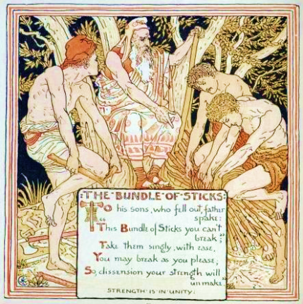
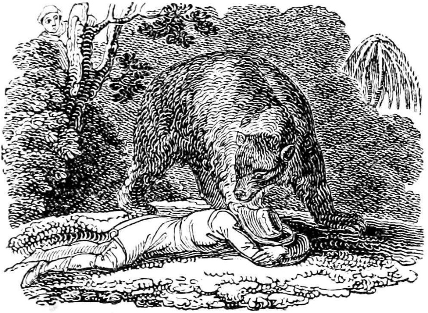
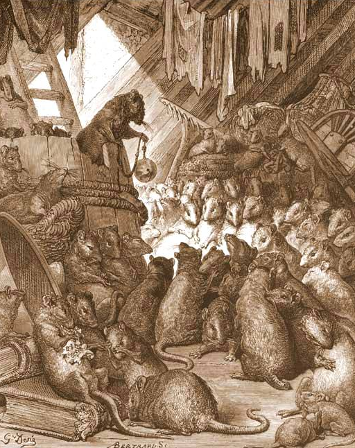

B2 · Stories & Literature
What Groups Are For
Three fables of Aesop about acting together — and the two ways it fails.
Play the audio and follow along, then read it again on your own. Tap or hover over a highlighted word to see what it means.
Three fables about doing things together. The first is about why groups are worth having. The other two are about the two different ways a group lets you down — and the second of those is much less comfortable than the first.
The Father and His Sons
A certain man had several sons who were always quarreling with one another, and, try as he might, he could not get them to live together in peace. So he decided to convince them of their foolishness by other means. He asked them to fetch a bundle of sticks, and invited each in turn to break it across his knee.
All of them tried and all of them failed. Then he untied the bundle and handed them the sticks one by one, and they had no difficulty at all in breaking them.
“There, my boys,” he said. “United, you will be more than a match for your enemies. But if you quarrel and separate, your weakness will put you at the mercy of anyone who attacks you.”
Union is strength.

Two Travelers and a Bear
Two men were traveling together through a forest when, all at once, a huge bear crashed out of the undergrowth near them.
One of the men, thinking only of his own safety, climbed a tree. The other, unable to fight the animal alone, threw himself on the ground and lay still, as if he were dead. He had heard that a bear will not touch a dead body.
It seems to have been true. The bear sniffed at the man's head for a while and then, apparently satisfied, walked away.
The man in the tree climbed down. “It looked just as if that bear whispered in your ear,” he said. “What did he tell you?”
“He said,” answered the other, “that it is not at all wise to keep company with a man who would desert his friend at the first sign of danger.”

Misfortune is the test of true friendship.
Putting the Bell on the Cat
The mice once called a meeting to decide on a plan to free themselves of their enemy, the cat. At the very least they wanted some way of knowing when she was coming, so that they might have time to run. Something had to be done: they lived in such constant fear of her claws that they hardly dared leave their holes by night or day.
Many plans were discussed and none was thought good enough. At last a very young mouse stood up and said:
“I have a plan that seems very simple, but I know it will work. All we have to do is hang a bell around the cat's neck. When we hear the bell ringing, we will know at once that our enemy is coming.”
All the mice were astonished that nobody had thought of it before. But in the middle of the rejoicing, an old mouse got to his feet and said:
“I agree that the young mouse's plan is very good. But let me ask one question. Who will bell the cat?”

It is one thing to say that something should be done, and quite another to do it.
Read together, the three fables say something the first one alone does not. The bundle of sticks is the easy case: people who stay together are harder to break, and everybody agrees with this while nothing is at stake. The bear is the first failure — the group holds until the moment it costs something, and then one man is in a tree. The mice are the second, and it is the more modern of the two, because nobody in that story does anything wrong. The plan is good. The meeting is enthusiastic. The vote, if they took one, would be unanimous. What is missing is the one mouse willing to carry the cost of the decision everybody else has approved, and the fable ends before anyone has to admit that.
English kept the phrase. To bell the cat still means to take on the dangerous job that the group has agreed needs doing and is waiting for somebody else to volunteer for.
Key Vocabulary
- to quarrel to argue angrily and repeatedly
- try as he might however hard he tried — a literary way of saying it
- to fetch to go and bring something back
- bundle a group of things tied together
- in turn one after another
- to untie to undo a knot and release what it held
- to be a match for to be strong enough to face somebody as an equal
- at the mercy of completely under somebody's power, with no defense
- undergrowth the low bushes and plants growing under trees
- to lie still to stay motionless
- to sniff to smell something by drawing air in through the nose
- to keep company with to travel or spend time with somebody
- to desert to abandon somebody who depends on you
- misfortune bad luck, especially when it lasts
- claw the sharp curved nail on an animal's foot
- to dare to be brave enough to do something
- astonished very surprised
- rejoicing open celebration
- unanimous agreed by everybody, with nobody against
- at stake at risk; able to be lost
- to bell the cat to take on the dangerous job everybody agrees is necessary
What Groups Are For — B2 · Stories & Literature · Renan the Teacher, English Language Academy · https://renangrossi.github.io/englishclasses/reading/b2/aesop-what-groups-are-for.html
Interactive Exercises
Practice
Complete each exercise, then click Submit to see your score and an explanation for every answer.
Speaking & Writing
Discussion
There are no right answers here — use these to practice speaking, or write a short answer to each.
- “Nobody in that story does anything wrong.” Is that true? Does the young mouse owe the group anything?
- Have you been in a meeting where the plan was agreed and the work was not? What happened next?
- The man in the tree asks a joking question and gets a serious answer. Which of the two would you rather travel with, honestly?
- The bundle of sticks has been used as a political emblem for two thousand years. Why is it such a useful image, and why is it dangerous?
- Write about 200 words about a decision a group you belong to agreed on and nobody carried out. Who should have?